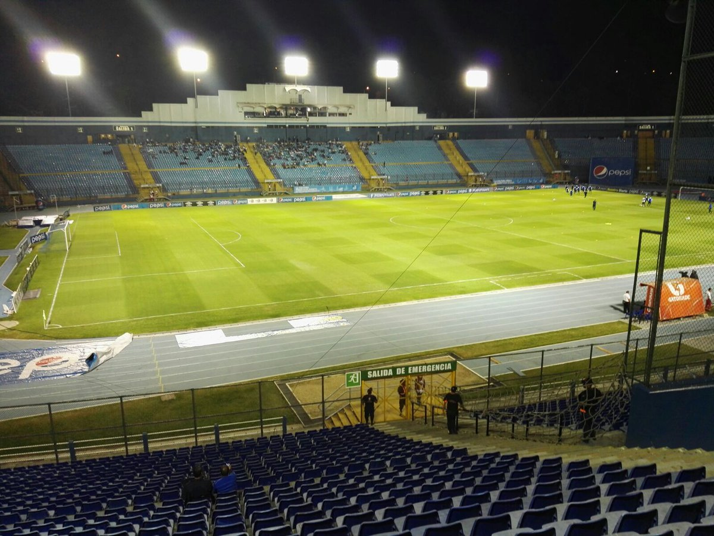

Estadio Doroteo Guamuch Flores

El Estadio Nacional Doroteo Guamuch Flores es un recinto deportivo localizado en la Ciudad de Guatemala. Se ubica en 10 Avenida, Ciudad Olímpica, Zona 5. Es el estadio más grande de Guatemala y el séptimo a nivel centroamericano. Su aforo oficial era de 50 000 espectadores, pero al colocarse butacas en todos sus sectores la capacidad se redujo a 26 116.1 La zona de asientos está dividida en cinco secciones: Palco (Situado en el oeste y la única sección con techo), Tribuna (Oeste que rodea el Palco), Preferencia (Este), General Norte (Norte) y el General Sur (Al sur donde está la entrada principal). La gramilla está rodeada por una pista de ocho carriles de atletismo, que inicialmente se hizo de arena. Posteriormente se remodeló para tener una pista sintética de tartán. Fue construido en 1948 en el Gobierno de Juan José Arévalo, para acoger los Juegos Centroamericanos y del Caribe en 1950. Originalmente llamado «Estadio Nacional Olímpico de la Revolución», en 1952 se le cambió el nombre a «Estadio Mateo Flores» en honor del corredor de larga distancia Doroteo Guamuch Flores, (1922-2011), ganador del maratón de Boston.2 El nombre del estadio fue modificado al nombre propio de Guamuch por acuerdo del legislativo de Guatemala en 2016.3